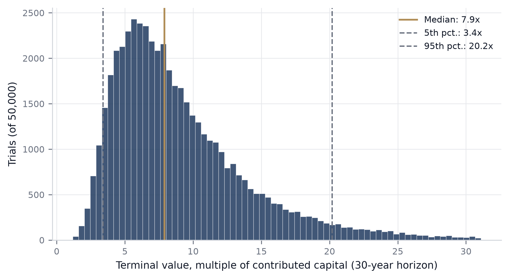
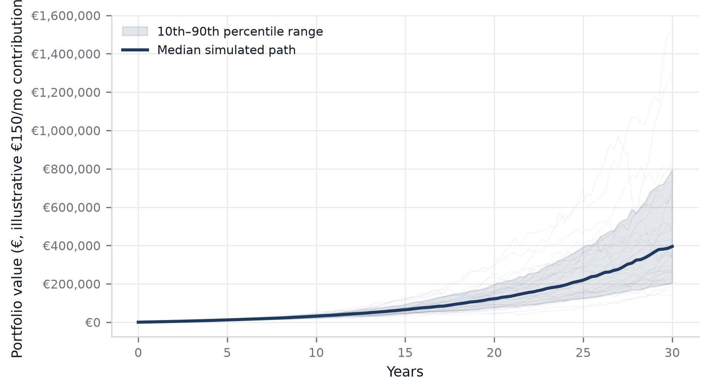
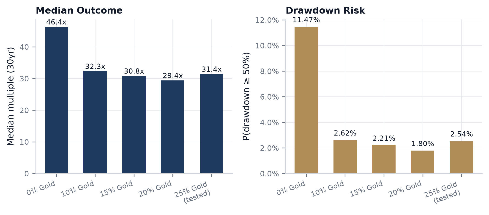
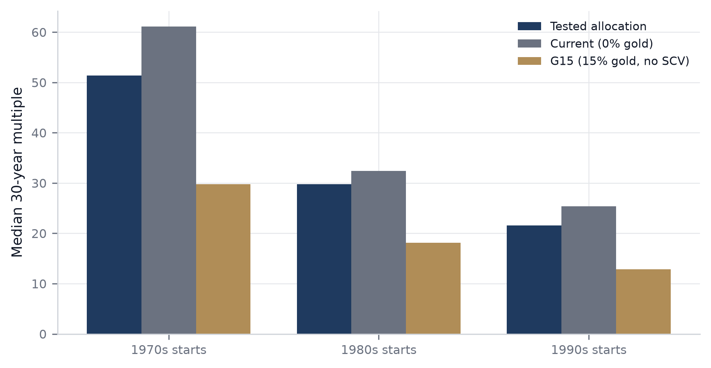

Research Notes
A real-history Monte Carlo answer: block-bootstrapped from 1977–2023 monthly returns, verified across 6+ independent runs. Full methodology and code on GitHub.
≈2.6%
P(portfolio ever draws down ≥50%), tested allocation
≈31.5x
Median 30-year outcome, lump-sum bootstrap
199
Real overlapping 30-year windows tested, 1977–2023
Distribution of Simulated 30-Year Outcomes
50,000-trial block-bootstrap, dollar-cost-averaged €150/mo contribution, tested allocation (51% equities / 12.75% small-cap value / 7.87% long bonds / 25% gold / 3.38% short bonds).

300 Simulated 30-Year Portfolio Paths
Same allocation, illustrative €150/mo contribution. Thin lines are individual simulated futures; the bold line is the median path; the shaded band is the 10th–90th percentile range.

Return vs. Catastrophic Drawdown Risk Across Gold Allocations
100,000-trial lump-sum bootstrap per allocation, real historical data, same engine throughout — no parametric assumptions. Risk drops sharply from 0% to ~10% gold; beyond that the trade-off flattens and isn't strictly monotonic.

Outcome Stability Across Starting Decades
199 real overlapping 30-year windows, 1977–2023, grouped by starting decade — tests whether the result depends on a lucky start date rather than a single lump-sum bootstrap draw.
